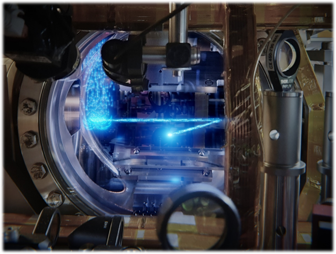

研究動機
隨著10–18 以下的分數頻率不確定度成為可能， 光學原子鐘徹底改變了頻率計量學——其在宇宙年齡的時間尺度上累積的總誤差僅約 1 秒。 這也同時開啟了量子感測與量子資訊的新方向。 在推動此前沿的眾多平台中，鹼土（類）原子（AEL）（如鍶、鐿）扮演關鍵角色。 它們的兩電子價殼結構帶來極為豐富的光學躍遷頻譜， 從 MHz 等級的寬線寬到mHz 等級的超窄鐘躍遷（見下圖）， 使我們得以以前所未有的方式同時控制原子的內部與運動自由度。
更關鍵的是，支撐超窄鐘躍遷的長壽命亞穩態不僅造就了當今最穩定的原子鐘， 也揭示了多維度量子位元空間與多樣的操控可能： 包含基態核自旋量子位元、光學量子位元、亞穩態超精細自旋以及亞穩態核自旋等。 這些特性使得 AEL 原子成為下一代量子科技的最佳候選， 能夠同時結合高精度計量、量子模擬與可擴展量子運算。

全球首個連續式玻色–愛因斯坦凝聚［Nature (2022)］。

AEL 原子中常用之光學躍遷能階示意。
於 2022 年，本團隊兩位主持人（於其博士研究期間） 首度實現連續雷射的物質波類比——真正的連續波（CW） 原子雷射。 其方法是建立並維持高通量、近量子簡併的鹼土（類）原子（以鍶為例）來源。 這項成果是連續生成超冷原子的重要里程碑，並 開啟 全新的實驗範式。
一個自然的問題是：這種連續來源的架構，將如何重塑量子科技的版圖？
這激發了我們以下核心研究議題：
- 能否以連續地量測光學量子位元取代傳統的脈衝操作， 進而提升原子鐘性能， 例如 實現 τ–1 的穩定度縮放 ，或在 mHz 鐘躍遷上實現 連續超輻射？
- 能否以中性原子節點互聯，形成量子網路？
- 超窄鐘躍遷除了高精度光譜外， 是否也能作為精密工具來產生糾纏與多體量子態？
- 能否以長壽命亞穩態打造連續／可擴展的量子處理器？ 若可行，該如何長時間且高保真地初始化、操作並維持系統？
以上問題形塑了我們持續的研究目標： 建立關鍵的控制工具與系統架構， 使連續式 AEL 原子來源成為未來量子感測、量子模擬與量子運算平台的骨幹。